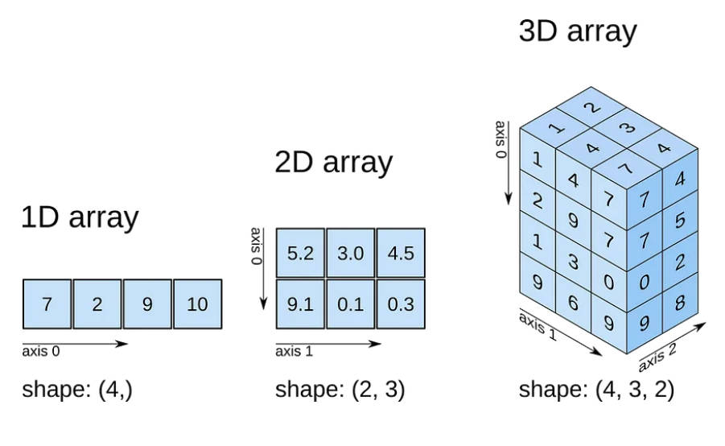
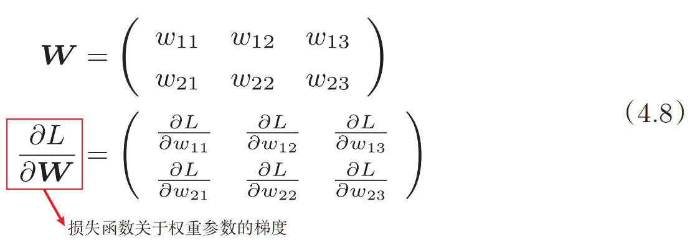
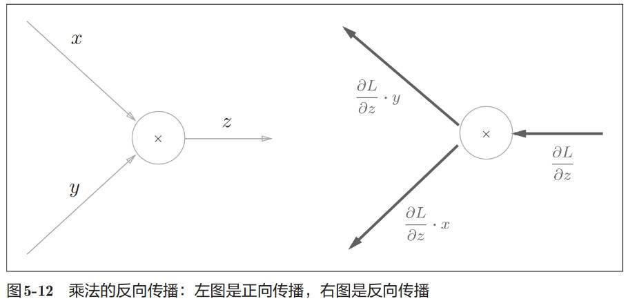
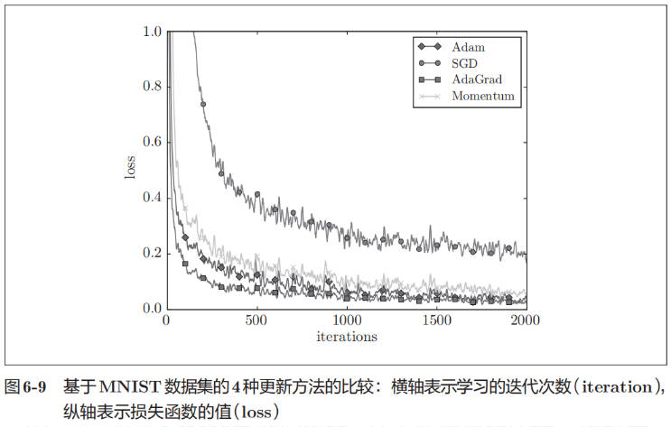

Introduction to Deep Learning
Table of Contents
Introduction to Deep Learning note.
<!– more –>
Introduction to Deep Learning
Python
Numpy 的 N 维数组
NumPy 的矩阵（通常是指二维数组）在内存中的存储顺序默认是按照 C-style 的行主序来存储的，这意味着矩阵中的元素是按照从左到右，再从上到下的顺序存储的。
Numpy 广播
NumPy 有广播功能，所以不同形状的数组之间也可以顺利地进行运算.
A = np.array([[1, 2], [3, 4]]) print(A*10) #[[10 20] # [30 40]] A = np.array([[1, 2], [3, 4]]) B = np.array([10, 20]) print(A * B) #[[10 40] # [30 80]]
多维数组的运算
多维数组就是“数字的集合”，数字排成一列的集合、排成长方形的集合、排成三维状或者（更加一般化的）N维状的集合都称为多维数组。
维度 Shape Axis

# ------------------------------- # 维度 和Shape A = np.array([1,2,3,4]) print("A => ", A) print("np.ndim(A) => ", np.ndim(A)) # 维度为1 print("A.shape => ", A.shape) # shape 为 (4,) 可理解为4行1列，也可理解为1行4列 print("A.shape[0] => ", A.shape[0]) # shape 为 4 B = np.array([[1,2],[3,4],[5,6]]) print("B => \n", B) print("np.ndim(B) => ", np.ndim(B)) # 维度为2 print("B.shape => ", B.shape) # shape为 (3,2) 表示3行2列 #A => [1 2 3 4] #np.ndim(A) => 1 #A.shape => (4,) #A.shape[0] => 4 #B => # [[1 2] # [3 4] # [5 6]] #np.ndim(B) => 2 #B.shape => (3, 2)
矩阵乘法
NumPy 的矩阵相乘使用 np.dot。矩阵乘法使用右乘，如 np.dot(A, B) 表示矩阵 A 右乘矩阵 B。
# 矩阵乘法 A = np.array([1,2,3,4]) C = np.dot(A, A) print("C => ", C) A = np.array([[1,2,3],[4,5,6]]) print("A => \n", A) print("A.shape => ", A.shape) B = np.array([[1,2],[3,4],[5,6]]) print("B => \n", B) print("B.shape => ", B.shape) C = np.dot(A, B) print("C => \n", C) # C => 30 # A => # [[1 2 3] # [4 5 6]] # A.shape => (2, 3) # B => # [[1 2] # [3 4] # [5 6]] # B.shape => (3, 2) # C => # [[22 28] # [49 64]]
np.argmax
# ------------------------------- # np.argmax x = np.array([ [0.1, 0.8, 0.1], [0.3, 0.1, 0.6], [0.2, 0.5, 0.3], [0.8, 0.1, 0.1]]) y = np.argmax(x, axis=1) z = np.argmax(x, axis=0) print("y => ", y) print("z => ", z) # y => [1 2 1 0] # z => [3 0 1]
np.sum
# ------------------------------- # np.sum print("# -------------------------------") x = np.array([1,2,1,0]) y = np.array([1,2,0,0]) print("x==y => ", x==y) print("np.sum(x==y) => ", np.sum(x==y)) x = np.array([[1,2,1],[4,5,6]]) print("np.sum(x**2) => ", np.sum(x**2, axis=1)) # 指定指定对 axis=1(行方向) 求和 # x==y => [ True True False True] # np.sum(x==y) => 3 # np.sum(x**2) => [ 6 77]
np.array 筛选数据
# ------------------------------- # np.array 筛选数据 print("# -------------------------------") x = np.array([ [1, 2, 3], [4, 5, 6], ]) t = np.array([1, 2]) print("x.shape => ", x.shape) batch_size = x.shape[0] print("x.shape[0] => ", x.shape[0]) group_idx = np.arange(batch_size) print("group_idx => ", group_idx) selected_elems = x[group_idx, t] # t=[1,2] 表示第0组数据选择第1个，第1组数据选择第2个 print("selected_elems => ", selected_elems) #x.shape => (2, 3) #x.shape[0] => 2 #group_idx => [0 1] #selected_elems => [2 6]
np.random.choice
# ------------------------------- # np.random.choice print("# -------------------------------") x_train = np.array([ [1, 2, 3], [4, 5, 6], [7, 8, 9], [10, 11, 12], [13, 14, 15], [16, 17, 18], [19, 20, 21], ]) train_size = x_train.shape[0] print("train_size => ", train_size) print("x_train => \n", x_train) batch_size = 4 batch_mask = np.random.choice(train_size, batch_size) print("batch_mask => ", batch_mask) x_batch = x_train[batch_mask] print("x_batch => \n", x_batch) # train_size => 7 # x_train => # [[ 1 2 3] # [ 4 5 6] # [ 7 8 9] # [10 11 12] # [13 14 15] # [16 17 18] # [19 20 21]] # batch_mask => [6 2 0 6] # x_batch => # [[19 20 21] # [ 7 8 9] # [ 1 2 3] # [19 20 21]]
遍历元素
# ------------------------------- # 遍历元素 X = np.array([ [1, 2, 3], [4, 5, 6], [7, 8, 9] ]) for idx, x in enumerate(X): print("idx => ", idx) print("x => ", x) # idx => 0 # x => [1 2 3] # idx => 1 # x => [4 5 6] # idx => 2 # x => [7 8 9]
np.meshgrid
# ------------------------------- # np.meshgrid print("# ------------------------") x0 = np.arange(-1, 1.5, 0.5) x1 = np.arange(-1, 1.5, 0.5) X, Y = np.meshgrid(x0, x1) print("X => \n", X) print("Y => \n", Y) # X => # [[-1. -0.5 0. 0.5 1. ] # [-1. -0.5 0. 0.5 1. ] # [-1. -0.5 0. 0.5 1. ] # [-1. -0.5 0. 0.5 1. ] # [-1. -0.5 0. 0.5 1. ]] # Y => # [[-1. -1. -1. -1. -1. ] # [-0.5 -0.5 -0.5 -0.5 -0.5] # [ 0. 0. 0. 0. 0. ] # [ 0.5 0.5 0.5 0.5 0.5] # [ 1. 1. 1. 1. 1. ]]
感知机
什么是感知机
感知机(perceptron)接收多个输入信号，输出一个信号。
感知机的信号只有“流/不流”（1/0）两种取值。在本书中，0对应“不传递信号”，1对应“传递信号”。
x1、x2 是输入信号，y是输出信号，w1、w2 是权重（w是 weight 的首字母）。
○称为“神经元(neuron)”或者“节点”。
输入信号被送往神经元时，会被分别乘以固定的权重（w1x1、w2x2）。神经元会计算传送过来的信号的总和，只有当这个总和超过了某个界限值时，才会输出 1。这也称为“神经元被激活”。这里将这个界限值称为阈值，用符号θ表示。
感知机实现
决定感知机参数的并不是计算机，而是我们人。我们看着真值表这种“训练数据”，人工考虑（想到）了参数的值。而机器学习的课题就是将这个决定参数值的工作交由计算机自动进行。学习是确定合适的参数的过程，而人要做的是思考感知机的构造（模型），并把训练数据交给计算机。
使用感知机实现与门和与非门：
def AND(x1, x2): # 0.4, 0.6, 0.8 也是一组可行的参数 w1, w2, theta = 0.5, 0.5, 0.7 tmp = x1*w1 + x2*w2 if tmp <= theta: return 0 elif tmp > theta: return 1 #AND(0, 0) => 0 #AND(1, 0) => 0 #AND(0, 1) => 0 #AND(1, 1) => 1 def NAND(x1, x2): x = np.array([x1,x2]) w = np.array([-0.5, -0.5]) b = 0.7 tmp = np.sum(w*x) + b if tmp <= 0: return 0 else: return 1 #NAND(0, 0) => 1 #NAND(1, 0) => 1 #NAND(0, 1) => 1 #NAND(1, 1) => 0
Tips:
什么时候人可以摆脱所有工作，将感知机的构造也交由机器决定？ AGI 实现的时候？
感知机的局限性
b 是被称为偏置的参数，用于控制神经元被激活的容易程度；而 w1 和 w2 是表示各个信号的权重的参数，用于控制各个信号的重要性。
使用感知机实现或门。可以选权重参数为：(b,w1,w2) = (-0.5, 1, 1)
def OR(x1, x2): x = np.array([x1, x2]) w = np.array([1, 1]) b = -0.5 tmp = np.sum(w*x) + b if tmp <= 0: return 0 else: return 1 #OR(0, 0) => 0 #OR(1, 0) => 1 #OR(0, 1) => 1 #OR(1, 1) => 1
上面感知机实现的或门可以用下面的公式表示：

感知机的局限性就在于它只能表示由一条直线分割的空间。图 2-8 这样弯曲的曲线无法用感知机表示。另外，由图 2-8 这样的曲线分割而成的空间称为非线性空间，由直线分割而成的空间称为线性空间。
多层感知机
“单层感知机无法表示异或门”或者“单层感知机无法分离非线性空间”。通过组合感知机（叠加层）就可以实现异或门。
使用多层感知机实现异或门：
def XOR(x1, x2): s1 = NAND(x1, x2) s2 = OR(x1, x2) y = AND(s1, s2) return y #XOR(0, 0) => 0 #XOR(1, 0) => 1 #XOR(0, 1) => 1 #XOR(1, 1) => 0
多层感知机（在理论上）可以表示计算机。
神经网络
神经网络结构
上图所示的神经网络被称为前馈神经网络 Feedforward Neural Networks，是一种最简单的神经网络，各神经元分层排列，每个神经元只与前一层的神经元相连。接收前一层的输出，并输出给下一层，各层间没有反馈。
激活函数
将输入信号的总和转换为输出信号，这种函数一般称为激活函数（activation function）。如“激活”一词所示，激活函数的作用在于决定如何来激活输入信号的总和。
Tips:
激活函数(activation function) 也被称为 传递函数(transfer function)。
感知机中使用了阶跃函数作为激活函数。如果将激活函数从阶跃函数换成其他函数，就可以进入神经网络的世界了。
阶跃函数实现
def step_function(x): y = x>0 # numpy 1.20.0 将 np.int 替换为 np.int_ return y.astype(np.int) x = np.array([-1.0, 1.0, 2.0]) print("x => ", x) y = x>0 print("y => ", y) z = y.astype(np.int_) print("z => ", z) #x => [-1. 1. 2.] #y => [False True True] #z => [0 1 1]
下图为阶跃函数的函数图像：
sigmoid 函数
神经网络中用 sigmoid 函数作为激活函数，进行信号的转换，转换后的信号被传送给下一个神经元。
def sigmoid(x): return 1/(1+np.exp(-x)) x = np.array([-1.0, 1.0, 2.0]) print("x => ", x) print("sigmoid(x) => ", sigmoid(x)) #x => [-1. 1. 2.] #sigmoid(x) => [0.26894142 0.73105858 0.88079708]
阶跃函数和 sigmoid 函数对比
- sigmoid 函数是一条平滑的曲线，输出随着输入发生连续性的变化。而阶跃函数以 0 为界，输出发生急剧性的变化。sigmoid 函数的平滑性对神经网络的学习具有重要意义。
- 两者的结构均是“输入小时，输出接近 0（为 0）； 随着输入增大，输出向 1 靠近（变成 1）”。也就是说，当输入信号为重要信息时，阶跃函数和 sigmoid 函数都会输出较大的值；当输入信号为不重要的信息时，两者都输出较小的值。
- 不管输入信号有多小，或者有多大，输出信号的值都在 0 到 1 之间。
- 阶跃函数和 sigmoid 函数还有其他共同点，就是两者均为非线性函数。
非线性函数
y=cx (c 为常数) 为线性函数。线性函数是一条笔直的直线。而非线性函数，顾名思义，指的是不像线性函数那样呈现出一条直线的函数。
神经网络的激活函数必须使用非线性函数。使用线性函数的话，加深神经网络的层数就没有意义了。
考虑把线性函数 h(x) = cx 作为激活函数，y(x) = h(h(h(x))) 的运算对应 3 层神经网络。这个运算会进行 y(x) = c × c × c × x 的乘法运算，但是同样的处理可以由 y(x) = ax（注意， a = c^3）这一次乘法运算（即没有隐藏层的神经网络）来表示。可见使用线性函数时，无法发挥多层网络带来的优势。因此，为了发挥叠加层所带来的优势，激活函数必须使用非线性函数。
ReLU 函数
神经网络发展历史中，很早就使用 sigmoid 函数作为激活函数，后来也使用 ReLU（Rectified Linear Unit）函数作为激活函数。
def relu(x): return np.maximum(0, x)
使用 NumPy 矩阵来实现神经网络
使用 NumPy 矩阵来实现神经网络。这里我们以图 3-14 中的简单神经网络为对象。这个神经网络省略了偏置和激活函数，只有权重。
3 层神经网络实现
使用 NumPy 矩阵来实现神经网络
使用 NumPy 矩阵来实现神经网络。这里我们以图 3-14 中的简单神经网络为对象。这个神经网络省略了偏置和激活函数，只有权重。
下面是 3 层神经网络的完整结构
符号约定
各层间信号传递的实现
下图使用矩阵表示输入层到第 1 层的信号传递：
下图显示了第 1 层神经元内的激活函数：
下图展示了第 1 层到第 2 层的信号传递：
下图展示了第 2 层到输出层的信号传递：
输出层所用的激活函数，要根据求解问题的性质决定。一般地，回归问题可以使用恒等函数，二元分类问题可以使用 sigmoid 函数，多元分类问题可以使用 softmax 函数。
import numpy as np def sigmoid(x): return 1/(1+np.exp(-x)) def identity_function(x): return x def init_network(): network = {} network['W1'] = np.array([[0.1,0.3,0.5], [0.2,0.4,0.6]]) network['b1'] = np.array([0.1,0.2,0.3]) network['W2'] = np.array([[0.1,0.4], [0.2,0.5], [0.3,0.6]]) network['b2'] = np.array([0.1,0.2]) network['W3'] = np.array([[0.1,0.3], [0.2,0.4]]) network['b3'] = np.array([0.1,0.2]) return network def forward(network, x): W1, W2, W3 = network['W1'], network['W2'], network['W3'] b1, b2, b3 = network['b1'], network['b2'], network['b3'] a1 = np.dot(x, W1) + b1 z1 = sigmoid(a1) a2 = np.dot(z1, W2) + b2 z2 = sigmoid(a2) a3 = np.dot(z2, W3) + b3 y = identity_function(a3) return y network = init_network() x = np.array([1.0, 0.5]) y = forward(network, x) print("y => ", y) # y => [0.31682708 0.69627909]
输出层的设计
机器学习的问题大致可以分为分类问题和回归问题。分类问题是数据属于哪一个类别的问题。比如，区分图像中的人是男性还是女性的问题就是分类问题。而回归问题是根据某个输入预测一个（连续的）数值的问题。比如，根据一个人的图像预测这个人的体重的问题就是回归问题（类似“57.4kg”这样的预测）。
神经网络可以用在分类问题和回归问题上，不过需要根据情况改变输出层的激活函数。一般而言，回归问题用恒等函数，分类问题用 softmax 函数。
恒等函数和 softmax 函数
恒等函数会将输入按原样输出，对于输入的信息，不加任何改动地直接输出。
恒等函数的网络结构图表示如下：
softmax 函数如下：
softmax 函数的网络结构图表示如下：
def softmax_simple(a): exp_a = np.exp(a) sum_exp_a = np.sum(exp_a) y = exp_a / sum_exp_a return y
上面的 softmax 函数的实现虽然正确描述了式（3.10），但在计算机的运算上有一定的缺陷。这个缺陷就是溢出问题。softmax 函数的实现中要进行指数函数的运算，但是此时指数函数的值很容易变得非常大。比如，e^10 的值会超过 20000，e^100 会变成一个后面有 40 多个 0 的超大值，e^1000 的结果会返回一个表示无穷大的 inf。如果在这些超大值之间进行除法运算，结果会出现“不确定”的情况。
def softmax(a): c = np.max(a) exp_a = np.exp(a-c) sum_exp_a = np.sum(exp_a) y = exp_a / sum_exp_a return y a = np.array([1010, 1000, 990]) y0 = softmax_simple(a) print("y0 => ", y0) y1 = softmax(a) print("y1 => ", y1) # y0 => [nan nan nan] # y1 => [9.99954600e-01 4.53978686e-05 2.06106005e-09]
softmax 函数的特征
- softmax 函数的输出是 0.0 到 1.0 之间的实数。并且，softmax 函数的输出值的总和是 1。输出总和为 1 是 softmax 函数的一个重要性质。正因为有了这个性质，我们才可以把 softmax 函数的输出解释为“概率”。
- 即便使用了 softmax 函数，各个元素之间的大小关系也不会改变。这是因为指数函数（y = exp(x)）是单调递增函数。
一般而言，神经网络只把输出值最大的神经元所对应的类别作为识别结果。并且，即便使用 softmax 函数，输出值最大的神经元的位置也不会变。因此，神经网络在进行分类时，输出层的 softmax 函数可以省略。在实际的问题中，由于指数函数的运算需要一定的计算机运算量，因此输出层的 softmax 函数一般会被省略。
求解机器学习问题的步骤可以分为“学习” 和“推理”两个阶段。首先，在学习阶段进行模型的学习，然后，在推理阶段，用学到的模型对未知的数据进行推理（分类）。如前所述，推理阶段一般会省略输出层的 softmax 函数。在输出层使用 softmax 函数是因为它和神经网络的学习有关系。
输出层的神经元数量
输出层的神经元数量需要根据待解决的问题来决定。对于分类问题，输出层的神经元数量一般设定为类别的数量。比如，对于某个输入图像，预测是图中的数字 0 到 9 中的哪一个的问题（10 类别分类问题），可以像图 3-23 这样，将输出层的神经元设定为 10 个。
手写数字识别
MNIST 数据集
Python 有 pickle 这个便利的功能。这个功能可以将程序运行中的对象保存为文件。如果加载保存过的 pickle 文件，可以立刻复原之前程序运行中的对象。
预处理在神经网络（深度学习）中非常实用，其有效性已在提高识别性能和学习的效率等众多实验中得到证明。在刚才的例子中，作为一种预处理，我们将各个像素值除以 255，进行了简单的正规化。实际上，很多预处理都会考虑到数据的整体分布。比如，利用数据整体的均值或标准差，移动数据，使数据整体以 0 为中心分布，或者进行正规化，把数据的延展控制在一定范围内。除此之外，还有将数据整体的分布形状均匀化的方法，即数据白化（whitening）等。
ERROR RuntimeWarning: overflow encountered in exp
使用下面 sigmoid_simple 会导致如题所述的错误。
def sigmoid_simple(x): return 1/(1+np.exp(-x)) def _positive_sigmoid(x): return 1 / (1 + np.exp(-x)) def _negative_sigmoid(x): # Cache exp so you won't have to calculate it twice exp = np.exp(x) return exp / (exp + 1) def sigmoid(x): positive = x >= 0 # Boolean array inversion is faster than another comparison negative = ~positive # empty contains junk hence will be faster to allocate # Zeros has to zero-out the array after allocation, no need for that # See comment to the answer when it comes to dtype result = np.empty_like(x, dtype=np.float_) result[positive] = _positive_sigmoid(x[positive]) result[negative] = _negative_sigmoid(x[negative]) return result
批处理
批处理对计算机的运算大有利处，可以大幅缩短每张图像的处理时间。因为大多数处理数值计算的库都进行了能够高效处理大型数组运算的最优化。并且，在神经网络的运算中，当数据传送成为瓶颈时，批处理可以减轻数据总线的负荷。
一次处理 100 个测试数据的原理如下图所示：
神经网络的学习
“学习”是指从训练数据中自动获取最优权重参数的过程。
从数据中学习
对于线性可分问题，第 2 章的感知机是可以利用数据自动学习的。 根据“感知机收敛定理”，通过有限次数的学习，线性可分问题是可解的。但是，非线性可分问题则无法通过（自动）学习来解决。
在实际的神经网络中，参数的数量成千上万，在层数更深的深度学习中，参数的数量甚至可以上亿，想要人工决定这些参数的值是不可能的。“从数据中学习”，是指可以由数据自动决定权重参数的值。
数据驱动
人想到的算法：让我们自己来设计一个能将 5 正确分类的程序，就会意外地发现这是一个很难的问题。人可以简单地识别出 5，但却很难明确说出是基于何种规律而识别出了 5。此外，每个人都有不同的写字习惯，要发现其中的规律是一件非常难的工作。
机器学习：与其绞尽脑汁，从零开始想出一个可以识别 5 的算法，不如考虑通过有效利用数据来解决这个问题。一种方案是，先从图像中提取特征量，再用机器学习技术学习这些特征量的模式。这里所说的“特征量”是指可以从输入数据（输入图像）中准确地提取本质数据（重要的数据）的转换器。图像的特征量通常表示为向量的形式。在计算机视觉领域，常用的特征量包括 SIFT、SURF 和 HOG 等。使用这些特征量将图像数据转换为向量，然后对转换后的向量使用机器学习中的 SVM、KNN 等分类器进行学习。
需要注意的是，将图像转换为向量时使用的特征量仍是由人设计的。对于不同的问题，必须使用合适的特征量（必须设计专门的特征量），才能得到好的结果。比如，为了区分狗的脸部，人们需要考虑与用于识别 5 的特征量不同的其他特征量。也就是说，即使使用特征量和机器学习的方法，也需要针对不同的问题人工考虑合适的特征量。
神经网络：在神经网络中，连图像中包含的重要特征量也都是由机器来学习的。不管要求解的问题是识别 5，还是识别狗，抑或是识别人脸，神经网络都是通过不断地学习所提供的数据，尝试发现待求解的问题的模式。也就是说，与待处理的问题无关，神经网络可以将数据直接作为原始数据，进行“端对端”的学习。
训练数据和测试数据
泛化能力是指处理未被观察过的数据（不包含在训练数据中的数据）的能力。获得泛化能力是机器学习的最终目标。
仅用一个数据集去学习和评价参数，是无法进行正确评价的。这样会导致可以顺利地处理某个数据集，但无法处理其他数据集的情况。只对某个数据集过度拟合的状态称为过拟合（over fitting）。
损失函数
神经网络以某个指标为线索寻找最优权重参数，这种所用的指标被称为损失函数（loss function）。这个损失函数可以使用任意函数，但一般用均方误差和交叉熵误差等。
均方误差
将正确解标签表示为 1，其他标签表示为 0 的表示方法称为 one-hot 表示。
下面为均方误差损失函数：
y = [0.1, 0.8, 0.1] t = [0, 1, 0] # 正确解标签“2”的值为1， 其他解标签的值为0 mean_squred_error = 0.5 * np.sum((y-t)**2) # mean_squred_error => 0.029999999999999992
交叉熵误差
下面为交叉熵误差损失函数：
def cross_entropy_error(y, t): # np.log(0) 为负无穷大，添加一个微小值以防止负无穷大 delta = 1e-7 return -np.sum(t * np.log(y + delta)) y = np.array([0.1, 0.8, 0.1]) t = np.array([0, 1, 0]) cross_entropy_err = cross_entropy_error(y, t) print("cross_entropy_err => ", cross_entropy_err) # cross_entropy_err => 0.22314342631421757
前面介绍的损失函数的例子中考虑的都是针对单个数据的损失函数。如果要求所有训练数据的损失函数的总和，以交叉熵误差为例，可以写成下面的式（4.3）:
mini-batch 学习
mini-batch 的损失函数是利用一部分样本数据来近似地计算整体。也就是说，用随机选择的小批量数据（mini-batch）作为全体训练数据的近似值。和统计学中的统计方法一样。
def cross_entropy_error_batch(y, t): if y.ndim == 1: t = t.reshape(1, t.size) y = y.reshape(1, t.size) batch_size = y.shape[0] # np.log(0) 为负无穷大，添加一个微小值以防止负无穷大 delta = 1e-7 # t 中数据以非one-hot 表示时，才可以使用 y[np.arange(batch_size), t] # TIPS: 非one-hot return -np.sum(np.log(y[np.arange(batch_size), t] + delta))
为何要设定损失函数
在神经网络的学习中，寻找最优参数（权重和偏置）时，不能用识别精度作为指标，是因为这样一来绝大多数地方的导数都会变为 0，导致参数无法更新。但可以以损失函数尽可能小作为指标。
假设某个神经网络正确识别出了 100 笔训练数据中的 32 笔，此时识别精度为 32 %。如果以识别精度为指标，即使稍微改变权重参数的值，识别精度也仍将保持在 32 %，不会出现变化。也就是说，仅仅微调参数，是无法改善识别精度的。即便识别精度有所改善，它的值也不会像 32.0123 … %这样连续变化，而是变为 33%、34%这样的不连续的、离散的值。而如果把损失函数作为指标，则当前损失函数的值可以表示为 0.92543 … 这样的值。并且，如果稍微改变一下参数的值，对应的损失函数也会像 0.93432 … 这样发生连续性的变化。
识别精度对微小的参数变化基本上没有什么反应，即便有反应，它的值也是不连续地、突然地变化。作为激活函数的阶跃函数也有同样的情况。出于相同的原因，如果使用阶跃函数作为激活函数，神经网络的学习将无法进行。阶跃函数的导数在绝大多数地方（除了 0 以外的地方）均为 0。也就是说，如果使用了阶跃函数，那么即便将损失函数作为指标，参数的微小变化也会被阶跃函数抹杀，导致损失函数的值不会产生任何变化。
数值微分
数值微分(numerical differentiation) 是用数值方法近似求解函数的导数的过程。
导数
def numerical_diff(f, x): h = 1e-4 # 0.0001 return (f(x+h) - f(x-h))/(2*h)
偏导数
def numerical_gradient_no_batch(f, x): h = 1e-4 # 0.0001 grad = np.zeros_like(x) for idx in range(x.size): tmp_val = x[idx] x[idx] = float(tmp_val) + h fxh1 = f(x) x[idx] = float(tmp_val) - h fxh2 = f(x) grad[idx] = (fxh1-fxh2)/(2*h) x[idx] = tmp_val # 还原值 return grad def numerical_gradient(f, X): if X.ndim == 1: return numerical_gradient_no_batch(f, X) else: grad = np.zeros_like(X) for idx, x in enumerate(X): grad[idx] = numerical_gradient_no_batch(f, x) return grad
梯度
由全部变量的偏导数汇总而成的向量称为梯度（gradient）。梯度指示的方向是各点处的函数值减小最多的方向。
梯度法
在梯度法中，函数的取值从当前位置沿着梯度方向前进一定距离，然后在新的地方重新求梯度，再沿着新梯度方向前进，如此反复，不断地沿梯度方向前进。像这样，通过不断地沿梯度方向前进，逐渐减小函数值的过程就是梯度法（gradient method）
像学习率这样的参数称为超参数。这是一种和神经网络的参数（权重和偏置）性质不同的参数。相对于神经网络的权重参数是通过训练数据和学习算法自动获得的，学习率这样的超参数则是人工设定的。一般来说，超参数需要尝试多个值，以便找到一种可以使学习顺利进行的设定。
学习率过大或者过小都无法得到好的结果。
参考 ai/IntroductionToDeepLearning/chapter04/lesson04_gradient_method.py
神经网络的梯度
神经网络的学习需要求梯度。这里所说的梯度是指损失函数关于权重参数的梯度。

参考 ai/IntroductionToDeepLearning/chapter04/lesson04_gradient_simplenet.py
学习算法的实现
神经网络存在合适的权重和偏置，调整权重和偏置以便拟合训练数据的过程称为“学习”。神经网络的学习分成下面 4 个步骤:
步骤 1（mini-batch）
从训练数据中随机选出一部分数据，这部分数据称为 mini-batch。我们的目标是减小 mini-batch 的损失函数的值。
步骤 2（计算梯度）
为了减小 mini-batch 的损失函数的值，需要求出各个权重参数的梯度。梯度表示损失函数的值减小最多的方向。
步骤 3（更新参数）
将权重参数沿梯度方向进行微小更新。
步骤 4（重复）
重复步骤 1、步骤 2、步骤 3。
通过梯度下降法更新参数，又因为这里使用的数据是随机选择的 mini batch 数据，所以称为随机梯度下降法（SGD, stochastic gradient descent）。
two layer net 实现
参考 ai/IntroductionToDeepLearning/chapter04/lesson04_two_layer_net.py
mini-batch 的实现
参考 ai/IntroductionToDeepLearning/chapter04/lesson04_train_neuralnet.py
基于测试数据的评价
神经网络学习的最初目标是掌握泛化能力，因此，要评价神经网络的泛化能力，就必须使用不包含在训练数据中的数据。在进行学习的过程中，会定期地对训练数据和测试数据记录识别精度。这里，每经过一个 epoch，我们都会记录下训练数据和测试数据的识别精度。
epoch 是一个单位。一个 epoch 表示学习中所有训练数据均被使用过一次时的更新次数。比如，对于 10000 笔训练数据，用大小为 100 笔数据的 mini-batch 进行学习时，重复随机梯度下降法 100 次，所有的训练数据就都被“看过”了。此时，100 次就是一个 epoch。
Tips:
实际上，一般做法是事先将所有训练数据随机打乱，然后按指定的批次大小，按序生成 mini-batch。这样每个 mini-batch 均有一个索引号，比如此例可以是 0, 1, 2, … , 99，然后用索引号可以遍历所有的 mini-batch。遍历一次所有数据，就称为一个 epoch。
从上图可见，随着 epoch 的前进（学习的进行），我们发现使用训练数据和测试数据评价的识别精度都提高了，并且，这两个识别精度基本上没有差异（两条线基本重叠在一起）。因此，可以说这次的学习中没有发生过拟合的现象。
误差反向传播法
数值微分虽然简单，也容易实现，但缺点是计算上比较费时间。误差反向传播法能够高效计算权重参数的梯度。
计算图
用计算图求解
用计算图求解问题 1：
用计算图求解问题 2：
用计算图解题的情况下，需要按如下流程进行。
1.构建计算图。
2.在计算图上，从左向右进行计算。
从左向右进行计算”是一种正方向上的传播，简称为正向传播（forward propagation）。正向传播是从计算图出发点到结束点的传播。既然有正向传播这个名称，当然也可以考虑反向（从图上看的话，就是从右向左）的传播。实际上，这种传播称为反向传播（backward propagation）。反向传播将在接下来的导数计算中发挥重要作用。
局部计算
计算图的特征是可以通过传递“局部计算”获得最终结果。“局部”这个词的意思是“与自己相关的某个小范围”。局部计算是指，无论全局发生了什么，局部都能只根据与自己相关的信息输出接下来的结果。
无论全局的计算有多么复杂，各个步骤所要做的就是对象节点的局部计算。虽然局部计算非常简单，但是通过传递它的计算结果，可以获得全局的复杂计算的结果。
为何用计算图解题
- 一个优点就在于前面所说的局部计算。无论全局是多么复杂的计算，都可以通过局部计算使各个节点致力于简单的计算，从而简化问题。
- 另一个优点是，利用计算图可以将中间的计算结果全部保存起来（比如，计算进行到 2 个苹果时的金额是 200 日元、加上消费税之前的金额 650 日元等）。
- 使用计算图最大的原因是，可以通过反向传播高效计算导数。
如何通过反向传播高效计算导数，在下面部分说明。
链式法则
计算图的正向传播将计算结果正向（从左到右）传递。而反向传播将局部导数反向（从右到左）传递，传递这个局部导数的原理，是基于链式法则（chain rule）的。
计算图的反向传播

什么是链式法则
链式法则（Chain Rule）是微积分中的一个基本概念，用于求解复合函数的导数。复合函数的导数等于外层函数对内层函数的导数乘以内层函数对自变量的导数。
链式法则和计算图
计算图的反向传播从右到左传播信号。反向传播的计算顺序是，先将节点的输入信号乘以节点的局部导数（偏导数），然后再传递给下一个节点。
反向传播
加法节点的反向传播
乘法节点的反向传播

Example
简单层的实现
MulLayer
class MulLayer: def __init__(self): self.x = None self.y = None def forward(self, x, y): self.x = x self.y = y out = x*y return out def backward(self, dout): dx = dout * self.y dy = dout * self.x return dx, dy
AddLayer
class AddLayer: def __init__(self): pass def forward(self,x,y): out = x+y return out def backward(self,dout): dx = dout * 1 dy = dout * 1 return dx,dy
激活函数层的实现
ReLU 层
class Relu: def __init__(self): self.mask = None def forward(self, x): self.mask = (x<=0) out = x.copy() out[self.mask] = 0 return out def backward(self, dout): dout[self.mask] = 0 dx = dout return dx
Sigmoid 层
class Sigmoid: def __init__(self): self.out = None def forward(self, x): out = 1/(1+np.exp(-x)) self.out = out return out def backward(self, dout): dx = dout * (1.0-self.out) * self.out return dx
Affine/Softmax 层的实现
神经网络的正向传播中进行的矩阵的乘积运算在几何学领域被称为“仿射变换”A。因此，这里将进行仿射变换的处理实现为“Affine 层”。仿射变换包括一次线性变换和一次平移，分别对应神经网络的加权和运算与加偏置运算。
Affine
Affine 计算图
Affine 反向传播形式化证明：
批版本的 Affine 层
class Affine: def __init__(self, W, b): self.W = W self.b = b self.x = None self.dW = None self.db = None def forward(self, x): self.x = x out = np.dot(x, self.W) + self.b return out def backward(self, dout): dx = np.dot(dout, self.W.T) self.dW = np.dot(self.x.T, dout) self.db = np.sum(dout, axis=0) return dx
Softmax-with-Loss 层
Softmax forward：
Cross Entropy Error forward:
Cross Entropy Error backward:
Softmax with Loss backward:
Softmax with Loss:
使用交叉熵误差作为 softmax 函数的损失函数后，反向传播得到（y1 − t1, y2 − t2, y3 − t3）这样“漂亮”的结果。实际上，这样“漂亮”的结果并不是偶然的，而是为了得到这样的结果，特意设计了交叉熵误差函数。
使用“平方和误差”作为“恒等函数”的损失函数，反向传播才能得到（y1 − t1, y2 − t2, y3 − t3）这样“漂亮”的结果。同样，是为了得到这样的结果，特意设计了平方和误差函数。
class SoftmaxWithLoss: def __init__(self): self.loss = None self.y = None self.t = None def forward(self, x, t): self.t = t self.y = softmax(x) self.loss = cross_entropy_error(self.y, self.t) return self.loss def backward(self, dout=1): batch_size = self.t.shape[0] dx = (self.y - self.t)/batch_size return dx
误差反向传播法的实现
对应误差反向传播法的神经网络的实现
使用 Affine 层、ReLU 激活函数层、Softmax 层构建的手写数字识别神经网络如下：
参考 ai/IntroductionToDeepLearning/chapter05/lesson05_two_layer_net.py
误差反向传播法的梯度确认
数值微分的优点是实现简单，因此，一般情况下不太容易出错。而误差反向传播法的实现很复杂，容易出错。所以，经常会比较数值微分的结果和误差反向传播法的结果，以确认误差反向传播法的实现是否正确。确认数值微分求出的梯度结果和误差反向传播法求出的结果是否一致（严格地讲，是
非常相近）的操作称为梯度确认（gradient check）
参考 ai/IntroductionToDeepLearning/chapter05/lesson05_gradient_check.py
使用误差反向传播法的学习
参考 ai/IntroductionToDeepLearning/chapter05/lesson05_train_neuralnet.py
与学习相关的技巧
参数的更新
神经网络的学习的目的是找到使损失函数的值尽可能小的参数。这是寻找最优参数的问题，解决这个问题的过程称为最优化（optimization）。
SGD
在前几章中，为了找到最优参数，我们将参数的梯度（导数）作为了线索。使用参数的梯度，沿梯度方向更新参数，并重复这个步骤多次，从而逐渐靠近最优参数，这个过程称为随机梯度下降法（stochastic gradient descent），简称 SGD。
SGD 的数学表示如下：
SGD 的缺点
我们以下面例子说明，SGD 的缺点:
梯度的特征是，y轴方向上大，x轴方向上小。虽然式（6.2）的最小值在(x, y) = (0, 0)处，但是图 6-2 中的梯度在很多地方并没有指向(0, 0)。
在图 6-3 中，SGD 呈“之”字形移动。这是一个相当低效的路径。也就是说，SGD 的缺点是，如果函数的形状非均向（anisotropic），比如呈延伸状，搜索的路径就会非常低效。SGD 低效的根本原因是，梯度的方向并没有指向最小值的方向。
Momentum
Momentum 是“动量”的意思，和物理有关。用数学式表示 Momentum 方法，如下所示。
式（6.3）表示了物体在梯度方向上受力，在这个力的作用下，物体的速度增加这一物理法则。
AdaGrad
在神经网络的学习中，学习率（数学式中记为η）的值很重要。学习率过小，会导致学习花费过多时间；反过来，学习率过大，则会导致学习发散而不能正确进行。在关于学习率的有效技巧中，有一种被称为学习率衰减（learning ratedecay）的方法，即随着学习的进行，使学习率逐渐减小。
逐渐减小学习率的想法，相当于将“全体”参数的学习率值一起降低。而 AdaGrad(Ada 是 Adaptive 的缩写)进一步发展了这个想法，针对“一个一个”的参数，赋予其“定制”的值。下面是 AdaGrad 的数学表示：
在更新参数时，参数的元素中变动较大（被大幅更新）的元素的学习率将变小。也就是说，可以按参数的元素进行学习率衰减，使变动大的参数的学习率逐渐减小。
由图 6-6 的结果可知，函数的取值高效地向着最小值移动。由于 y 轴方向上的梯度较大，因此刚开始变动较大，但是后面会根据这个较大的变动按比例进行调整，减小更新的步伐。因此，y轴方向上的更新程度被减弱，“之”字形的变动程度有所衰减。
AdaGrad 缺点
AdaGrad 会记录过去所有梯度的平方和。因此，学习越深入，更新的幅度就越小。实际上，如果无止境地学习，更新量就会变为 0，完全不再更新。为了改善这个问题，可以使用 RMSProp 方法。RMSProp 方法并不是将过去所有的梯度一视同仁地相加，而是逐渐地遗忘过去的梯度，在做加法运算时将新梯度的信息更多地反映出来。这种操作从专业上讲，称为“指数移动平均”，呈指数函数式地减小过去的梯度的尺度。
Adam
Adam 是 2015 年提出的新方法。它的理论有些复杂，直观地讲，就是融合了 Momentum 和 AdaGrad 的方法。通过组合前面两个方法的优点，有望实现参数空间的高效搜索。
Adam 会设置 3 个超参数。一个是学习率（论文中以α出现），另外两个是一次 momentum 系数β1 和二次 momentum 系数β2。根据论文，标准的设定值是β1 为 0.9，β2 为 0.999。设置了这些值后，大多数情况下都能顺利运行。
使用简单问题对更新方法进行比较
如图 6-8 所示，根据使用的方法不同，参数更新的路径也不同。只看这个图的话，AdaGrad 似乎是最好的，不过也要注意，结果会根据要解决的问题而变。并且，很显然，超参数（学习率等）的设定值不同，结果也会发生变化。
上面我们介绍了 SGD、Momentum、AdaGrad、Adam 这 4 种方法，那么用哪种方法好呢？非常遗憾，（目前）并不存在能在所有问题中都表现良好的方法。这 4 种方法各有各的特点，都有各自擅长解决的问题和不擅长解决的问题。很多研究中至今仍在使用 SGD。Momentum 和 AdaGrad 也是值得一试的方法。最近，很多研究人员和技术人员都喜欢用 Adam。
参考 ai/IntroductionToDeepLearning/chapter06/lesson06_optimizer_compare_naive.py
基于 MNIST 数据集的更新方法的比较

从图 6-9 的结果中可知，与 SGD 相比，其他 3 种方法学习得更快，而且速度基本相同，仔细看的话，AdaGrad 的学习进行得稍微快一点。这个实验需要注意的地方是，实验结果会随学习率等超参数、神经网络的结构（几层深等）的不同而发生变化。不过，一般而言，与 SGD 相比，其他 3 种方法可以学习得更快，有时最终的识别精度也更高。
参考 ai/IntroductionToDeepLearning/chapter06/lesson06_optimizer_compare_mnist.py
权重的初始值
在神经网络的学习中，权重的初始值特别重要。实际上，设定什么样的权重初始值，经常关系到神经网络的学习能否成功。
可以将权重初始值设为 0 吗
将权重初始值设为 0 的话，将无法正确进行学习。严格地说，不能将权重初始值设成一样的值。在误差反向传播法中，如果所有权重的初始值相同，所有的权重值都会进行相同的更新。比如，在 2 层神经网络中，假设第 1 层和第 2 层的权重为 0。这样一来，正向传播时，因为输入层的权重为 0，所以第 2 层的神经元全部会被传递相同的值。第 2 层的神经元中全部输入相同的值，这意味着反向传播时第 2 层的权重全部都会进行相同的更新。为了防止“权重均一化”（严格地讲，是为了瓦解权重的对称结构），必须随机生成权重的初始值。
隐藏层的激活值的分布
观察权重初始值是如何影响隐藏层的激活值（激活函数的输出数据）的分布，可以获得很多启发。
下图为使用标准差为 1 的高斯分布时，各层的激活值的分布:

从图 6-10 可知，各层的激活值呈偏向 0 和 1 的分布。这里使用的 sigmoid 函数是 S 型函数，随着输出不断地靠近 0（或者靠近 1），它的导数的值逐渐接近 0。因此，偏向 0 和 1 的数据分布会造成反向传播中梯度的值不断变小，最后消失。这个问题称为梯度消失（gradient vanishing）。层次加深的深度学习中，梯度消失的问题可能会更加严重。
下图为使用标准差为 0.01 的高斯分布时，各层的激活值的分布:
这次呈集中在 0.5 附近的分布。因为不像刚才的例子那样偏向 0 和 1，所以不会发生梯度消失的问题。但是，激活值的分布有所偏向，说明在表现力上会有很大问题。如果有多个神经元都输出几乎相同的值，那它们就没有存在的意义了。比如，如果 100 个神经元都输出几乎相同的值，那么也可以由 1 个神经元来表达基本相同的事情。因此，激活值在分布上有所偏向会出现“表现力受限”的问题。
各层的激活值的分布都要求有适当的广度。为什么呢？因为通过在各层间传递多样性的数据，神经网络可以进行高效的学习。反过来，如果传递的是有所偏向的数据，就会出现梯度消失或者“表现力受限”的问题，导致学习可能无法顺利进行。
下图是 Xavier 初始值计算方法：
下图为使用 Xavier 初始值作为权重初始值时的各层激活值的分布:
图 6-13 的分布中，后面的层的分布呈稍微歪斜的形状。如果用 tanh 函数（双曲线函数）代替 sigmoid 函数，这个稍微歪斜的问题就能得到改善。实际上，使用 tanh 函数后，会呈漂亮的吊钟型分布。tanh 函数和 sigmoid 函数同是 S 型曲线函数，但 tanh 函数是关于原点(0, 0) 对称的 S 型曲线，而 sigmoid 函数是关于(x, y)=(0, 0.5)对称的 S 型曲线。众所周知，用作激活函数的函数最好具有关于原点对称的性质。
ReLU 的权重初始值
Xavier 初始值是以激活函数是线性函数为前提而推导出来的。因为 sigmoid 函数和 tanh 函数左右对称，且中央附近可以视作线性函数，所以适合使用 Xavier 初始值。但当激活函数使用 ReLU 时，一般推荐使用 ReLU 专用的初始值，也就是 Kaiming He 等人推荐的初始值，也称为“He 初始值”[10]。
下图是 He 初始值计算方法：
下图是使用 ReLU 作为激活函数时，不同权重初始值，导致的激活值分布：
观察实验结果可知，当“std = 0.01”时，各层的激活值非常小 A。神经网络上传递的是非常小的值，说明逆向传播时权重的梯度也同样很小。这是很严重的问题，实际上学习基本上没有进展。
接下来是初始值为 Xavier 初始值时的结果。在这种情况下，随着层的加深，偏向一点点变大。实际上，层加深后，激活值的偏向变大，学习时会出现梯度消失的问题。
而当初始值为 He 初始值时，各层中分布的广度相同。由于即便层加深，数据的广度也能保持不变，因此逆向传播时，也会传递合适的值。
基于 MNIST 数据集的权重初始值的比较

这个实验中，神经网络有 5 层，每层有 100 个神经元，激活函数使用的是 ReLU。从图 6-15 的结果可知，std = 0.01 时完全无法进行学习。这和刚才观察到的激活值的分布一样，是因为正向传播中传递的值很小（集中在 0 附近的数据）。因此，逆向传播时求到的梯度也很小，权重几乎不进行更新。相反，当权重初始值为 Xavier 初始值和 He 初始值时，学习进行得很顺利。并且，我们发现 He 初始值时的学习进度更快一些。
Batch Normalization
Batch Normalization 的算法
Batch Normalization 的思路是调整各层的激活值分布使其拥有适当的广度。为此，要向神经网络中插入对数据分布进行正规化的层，即 Batch Normalization 层，如图 6-16 所示。
Batch Normalization 的数学表示如下：
下面是 Batch Normalization 的计算图：
论文 Understanding the backward pass through Batch Normalization Layer 中有对 Batch Normalization 反向传播的推导。
Batch Normalization 的评估
下图为使用 Batch Normalization 的神经网络：
图 6-19 是权重初始值的标准差为各种不同的值时的学习过程图。
几乎所有的情况下都是使用 Batch Norm 时学习进行得更快。同时也可以发现，实际上，在不使用 Batch Norm 的情况下，如果不赋予一个尺度好的初始值，学习将完全无法进行。
正则化
机器学习的问题中，过拟合是一个很常见的问题。过拟合指的是只能拟合训练数据，但不能很好地拟合不包含在训练数据中的其他数据的状态。机器学习的目标是提高泛化能力，即便是没有包含在训练数据里的未观测数据，也希望模型可以进行正确的识别。
过拟合
发生过拟合的原因，主要有以下两个。
• 模型拥有大量参数、表现力强。
• 训练数据少。
这里，我们故意满足这两个条件，制造过拟合现象。为此，要从 MNIST 数据集原本的 60000 个训练数据中只选定 300 个，并且，为了增加网络的复杂度，使用 7 层网络（每层有 100 个神经元，激活函数为 ReLU）。如此得到的训练数据和测试数据识别精度对比如下：

权值衰减
权值衰减是一直以来经常被使用的一种抑制过拟合的方法。该方法通过在学习的过程中对大的权重进行惩罚，来抑制过拟合。很多过拟合原本就是因为权重参数取值过大才发生的。
复习一下，神经网络的学习目的是减小损失函数的值。为损失函数加上权重的平方范数（L2 范数）。这样一来，就可以抑制权重变大。用符号表示的话，如果将权重记为 W，L2 范数的权值衰减就是 0.5λW^2。然后将这个 0.5λW^2 加到损失函数上。这里，λ是控制正则化强度的超参数。λ 设置得越大，对大的权重施加的惩罚就越重。此外， 0.5λW^2 开头的 0.5 是用于将 0.5λW^2 的求导结果变成λW 的调整用常量。
对于所有权重，权值衰减方法都会为损失函数加上 0.5λW^2。因此，在求权重梯度的计算中，要为之前的误差反向传播法的结果加上正则化项的导数 λW。
引入权值衰减后得到的训练数据和测试数据识别精度对比如下：
如图 6-21 所示，虽然训练数据的识别精度和测试数据的识别精度之间有差距，但是与没有使用权值衰减的图 6-20 的结果相比，差距变小了。这说明过拟合受到了抑制。此外，还要注意，训练数据的识别精度没有达到 100%（1.0）。
Dropout
权值衰减方法可以简单地实现，在某种程度上能够抑制过拟合。但是，如果网络的模型变得很复杂，只用权值衰减就难以应对了。在这种情况下，我们经常会使用 Dropout 方法。
Dropout 是一种在学习的过程中随机删除神经元的方法。训练时，随机选出隐藏层的神经元，然后将其删除。被删除的神经元不再进行信号的传递，如图 6-22 所示。训练时，每传递一次数据，就会随机选择要删除的神经元。 然后，测试时，虽然会传递所有的神经元信号，但是对于各个神经元的输出，要乘上训练时的删除比例后再输出。
引入 Dropout 后得到的训练数据和测试数据识别精度对比如下：
图 6-23 中，通过使用 Dropout，训练数据和测试数据的识别精度的差距变小了。并且，训练数据也没有到达 100%的识别精度。像这样，通过使用 Dropout，即便是表现力强的网络，也可以抑制过拟合。
机器学习中经常使用集成学习。所谓集成学习，就是让多个模型单独进行学习，推理时再取多个模型的输出的平均值。用神经网络的语境来说，比如，准备 5 个结构相同（或者类似）的网络，分别进行学习，测试时，以这 5 个网络的输出的平均值作为答案。实验告诉我们，通过进行集成学习，神经网络的识别精度可以提高好几个百分点。这个集成学习与 Dropout 有密切的关系。这是因为可以将 Dropout 理解为，通过在学习过程中随机删除神经元，从而每一次都让不同的模型进行学习。并且，推理时，通过对神经元的输出乘以删除比例（比如，0.5 等），可以取得模型的平均值。也就是说，可以理解成，Dropout 将集成学习的效果（模拟地）通过一个网络实现了。
超参数的验证
神经网络中，除了权重和偏置等参数，超参数（hyper-parameter）也经常出现。这里所说的超参数是指，比如各层的神经元数量、batch 大小、参数更新时的学习率或权值衰减等。如果这些超参数没有设置合适的值，模型的性能就会很差。虽然超参数的取值非常重要，但是在决定超参数的过程中一般会伴随很多的试错。
验证数据
训练数据用于参数（权重和偏置）的学习，验证数据用于超参数的性能评估。为了确认泛化能力，要在最后使用（比较理想的是只用一次）测试数据。
调整超参数时，必须使用超参数专用的确认数据。用于调整超参数的数据，一般称为验证数据（validation data）。我们使用这个验证数据来评估超参数的好坏。
超参数的最优化
步骤 0: 设定超参数的范围。
步骤 1: 从设定的超参数范围中随机采样。
步骤 2: 使用步骤 1 中采样到的超参数的值进行学习，通过验证数据评估识别精度（但是要将 epoch 设置得很小）。
步骤 3: 重复步骤 1 和步骤 2（100 次等），根据它们的识别精度的结果，缩小超参数的范围。
超参数最优化的实现
下面我们就以权值衰减系数为 10^−8 到 10^−4 、学习率为 10^−6 到 10^−2 的范围进行实验，结果如图 6-24 所示:
图 6-24 中，按识别精度从高到低的顺序排列了验证数据的学习的变化。从图中可知，直到“Best-5”左右，学习进行得都很顺利。因此，我们来观察一下“Best-5”之前的超参数的值（学习率和权值衰减系数），结果如下所示。
Best-1 (val acc:0.83) | lr:0.0092, weight decay:3.86e-07
Best-2 (val acc:0.78) | lr:0.00956, weight decay:6.04e-07
Best-3 (val acc:0.77) | lr:0.00571, weight decay:1.27e-06
Best-4 (val acc:0.74) | lr:0.00626, weight decay:1.43e-05
Best-5 (val acc:0.73) | lr:0.0052, weight decay:8.97e-06
从这个结果可以看出，学习率在 0.001 到 0.01、权值衰减系数在 10^−8 到 10^−6 之间时，学习可以顺利进行。像这样，观察可以使学习顺利进行的超参数的范围，从而缩小值的范围。然后，在这个缩小的范围中重复相同的操作。这样就能缩小到合适的超参数的存在范围，然后在某个阶段，选择一个最终的超参数的值。
卷积神经网络
卷积神经网络 Convolutional Neural Network, 简称 CNN
整体结构
之前介绍的神经网络中，相邻层的所有神经元之间都有连接，这称为全连接。我们使用 Affine 层实现了全连接层。
下面是全连接层构成的神经网络和 CNN 神经网络的结构对比：
卷积层
全连接层存在的问题
全连接层忽视了数据的形状。比如，输入数据是图像时，图像通常是高、长、通道方向上的 3 维形状。但是，向全连接层输入时，需要将 3 维数据拉平为 1 维数据。图像是 3 维形状，这个形状中应该含有重要的空间信息。比如，空间上邻近的像素为相似的值、RBG 的各个通道之间分别有密切的关联性、相距较远的像素之间没有什么关联等，3维形状中可能隐藏有值得提取的本质模式。但是，因为全连接层会忽视形状，将全部的输入数据作为相同的神经元（同一维度的神经元）处理，所以无法利用与形状相关的信息。
当输入数据是图像时，卷积层会以 3 维数据的形式接收输入数据，并同样以 3 维数据的形式输出至下一层。因此，在 CNN 中，可以（有可能）正确理解图像等具有形状的数据。
CNN 中，有时将卷积层的输入输出数据称为特征图（feature map）。其中，卷积层的输入数据称为输入特征图（input feature map），输出数据称为输出特征图（output feature map）。
卷积运算
填充
步幅
使用下面方法计算 cnn 输出大小：
3 维数据的卷积运算
结合方块思考
下面这个例子中，数据输出是 1 张特征图，即通道数为 1 的特征图。
下面这个例子中，数据输出是 FN 张特征图，即通道数为 FN 的特征图。
下图这个例子中，数据输出是 FN 张特征图，即通道数为 FN 的特征图。并为每个通道添加 1 个偏置。
批处理
下图展示了批处理将 N 次的处理汇总成了 1 次进行:
池化层
池化是缩小高、长方向上的空间的运算。
池化层有以下特征:
- 没有要学习的参数。池化层和卷积层不同，没有要学习的参数。池化只是从目标区域中取最大值（或者平均值），所以不存在要学习的参数。
- 通道数不发生变化。经过池化运算，输入数据和输出数据的通道数不会发生变化。如图 7-15 所示，计算是按通道独立进行的。
- 对微小的位置变化具有鲁棒性（健壮）输入数据发生微小偏差时，池化仍会返回相同的结果。因此，池化对输入数据的微小偏差具有鲁棒性。
比如，3 × 3 的池化的情况下，如图 7-16 所示，池化会吸收输入数据的偏差（根据数据的不同，结果有可能不一致）。
卷积层和池化层的实现
卷积层实现
基于 im2col 的展开来实现卷积层：
池化层的实现
池化层的实现和卷积层相同，都使用 im2col 展开输入数据。不过，池化的情况下，在通道方向上是独立的，这一点和卷积层不同。
CNN 的实现
如果使用 MNIST 数据集训练如上的简单 CNN，训练数据的识别率为 99.82%，测试数据的识别率为 98.96%。
CNN 的可视化
如图 7-26 所示，如果堆叠了多层卷积层，则随着层次加深，提取的信息也愈加复杂、抽象，这是深度学习中很有意思的一个地方。
具有代表性的 CNN
LeNet
LeNet 在 1998 年被提出，是进行手写数字识别的网络。
AlexNet
AlexNet 在 2012 年的 ImageNet 大规模图像分类竞赛中获得了第一名。
AlexNet 叠有多个卷积层和池化层，最后经由全连接层输出结果。虽然结构上 AlexNet 和 LeNet 没有大的不同，但有以下几点差异。
• 激活函数使用 ReLU。
• 使用进行局部正规化的 LRN（Local Response Normalization）层。
• 使用 Dropout
深度学习
深度学习是加深了层的深度神经网络。基于之前介绍的网络，只需通过叠加层，就可以创建深度网络。
加深网络
向更深的网络出发
如图 8-1 所示，这个网络的层比之前实现的网络都更深。这里使用的卷积层全都是 3 × 3 的小型滤波器，特点是随着层的加深，通道数变大（卷积层的通道数从前面的层开始按顺序以 16、16、32、32、64、64 的方式增加）。此外，如图 8-1 所示，插入了池化层，以逐渐减小中间数据的空间大小；并且，后面的全连接层中使用了 Dropout 层。
这个网络的识别精度为 99.38%。
进一步提高识别精度
Data Augmentation 基于算法“人为地”扩充输入图像（训练图像）。具体地说，如图 8-4 所示，对于输入图像，通过施加旋转、垂直或水平方向上的移动等微小变化，增加图像的数量。这在数据集的图像数量有限时尤其有效。除了如图 8-4 所示的变形之外，Data Augmentation 还可以通过其他各种方法扩充图像，比如裁剪图像的“crop 处理”、将图像左右翻转的“flip 处理” 等。对于一般的图像，施加亮度等外观上的变化、放大缩小等尺度上的变化也是有效的。
不管怎样，通过 Data Augmentation 巧妙地增加训练图像，就可以提高深度学习的识别精度。
加深层的动机
加深层的一个好处就是可以减少网络的参数数量。
加深层的另一个好处就是使学习更加高效。通过加深层，可以将各层要学习的问题分解成容易解决的简单问题，从而可以进行高效的学习。
深度学习的小历史
ImageNet
ImageNet 是拥有超过 100 万张图像的数据集。我们以 ILSVRC 这个大规模图像识别比赛为轴，看一下深度学习最近的发展趋势。
VGG
VGG 是由卷积层和池化层构成的基础的 CNN。VGG 中需要注意的地方是，基于 3×3 的小型滤波器的卷积层的运算是连续进行的。如图 8-9 所示，重复进行“卷积层重叠 2 次到 4 次，再通过池化层将大小减半”的处理，最后经由全连接层输出结果。
GoogleNet
GoogLeNet 的特征是，网络不仅在纵向上有深度，在横向上也有深度（广度）。GoogLeNet 在横向上有“宽度”，这称为“Inception 结构”，Inception 结构使用了多个大小不同的滤波器（和池化），最后再合并它们的结果。
ResNet
ResNet 是微软团队开发的网络。它的特征在于具有比以前的网络更深的结构。
实践中经常会灵活应用使用 ImageNet 这个巨大的数据集学习到的权重数据，这称为迁移学习，将学习完的权重（的一部分）复制到其他神经网络，进行再学习（fine tuning）。比如，准备一个和 VGG 相同结构的网络，把学习完的权重作为初始值，以新数据集为对象，进行再学习。迁移学习在手头数据集较少时非常有效。
深度学习的高速化
基于 GPU 的高速化
深度学习中需要进行大量的乘积累加运算（或者大型矩阵的乘积运算）。这种大量的并行运算正是 GPU 所擅长的（反过来说，CPU 比较擅长连续的、复杂的计算）。因此，与使用单个 CPU 相比，使用 GPU 进行深度学习的运算
可以达到惊人的高速化。
分布式学习
现在的深度学习框架中，出现了好几个支持多 GPU 或者多机器的分布式学习的框架。
运算精度的位数缩减
计算机中为了表示实数，主要使用 64 位或者 32 位的浮点数。通过使用较多的位来表示数字，虽然数值计算时的误差造成的影响变小了，但计算的处理成本、内存使用量却相应地增加了，还给总线带宽带来了负荷。
深度学习并不那么需要数值精度的位数。这是神经网络的一个重要性质。这个性质是基于神经网络的健壮性而产生的。这里所说的健壮性是指，比如，即便输入图像附有一些小的噪声，输出结果也仍然保持不变。可以认为，正是因为有了这个健壮性，流经网络的数据即便有所“劣化”，对输出结果的影响也较小。
计算机中表示小数时，有 32 位的单精度浮点数和 64 位的双精度浮点数等格式。根据以往的实验结果，在深度学习中，即便是 16 位的半精度浮点数（half float），也可以顺利地进行学习。实际上，NVIDIA 的下一代 GPU 框架 Pascal 也支持半精度浮点数的运算，由此可以认为今后半精度浮点数将被作为标准使用。
深度学习的应用案例
物体检测
在使用 CNN 进行物体检测的方法中，有一个叫作 R-CNN[35]的有名的方法。图 8-18 显示了 R-CNN 的处理流。
图像分割
图像分割是指在像素水平上对图像进行分类。
FCN（Fully Convolutional Network）是“全部由卷积层构成的网络”。相对于一般的 CNN 包含全连接层，FCN 将全连接层替换成发挥相同作用的卷积层。该方法通过一次 forward 处理，对所有像素进行分类。
图像标题的生成
图像标题的生成是给出一个图像后，自动生成介绍这个图像的文字（图像的标题）。
一个基于深度学习生成图像标题的代表性方法是被称为 NIC（Neural Image Caption）的模型。NIC 由深层的 CNN 和处理自然语言的 RNN（Recurrent Neural Network）构成。RNN 是呈递归式连接的网络，经常被用于自然语言、时间序列数据等连续性的数据上。NIC 基于 CNN 从图像中提取特征，并将这个特征传给 RNN。RNN 以 CNN 提取出的特征为初始值，递归地生成文本。
组合图像和自然语言等多种信息进行的处理称为多模态处理。
深度学习的未来
图像风格变换
输入两个图像后，会生成一个新的图像。两个输入图像中，一个称为“内容图像”，另一个称为“风格图像”。
图像的生成
图像的生成是生成新的图像时不需要任何图像（虽然需要事先使用大量的图像进行学习，但在“画”新图像时不需要任何图像）。
DCGAN（Deep Convolutional Generative Adversarial Network）就是图像生成的一种方法。DCGAN 中使用了深度学习，其技术要点是使用了 Generator（生成者）和 Discriminator（识别者）这两个神经网络。Generator 生成近似真品的图像，Discriminator 判别它是不是真图像（是 Generator 生成的图像还是实际拍摄的图像）。像这样，通过让两者以竞争的方式学习，Generator 会学习到更加精妙的图像作假技术，Discriminator 则会成长为能以更高精度辨别真假的鉴定师。两者互相切磋、共同成长，这是 GAN（Generative Adversarial Network）这个技术的有趣之处。
之前我们见到的机器学习问题都是被称为监督学习（supervised learning）的问题。这类问题就像手写数字识别一样，使用的是图像数据和教师标签成对给出的数据集。不过这里讨论的问题，并没有给出监督数据，只给了大量的图像（图像的集合），这样的问题称为无监督学习（unsupervised learning）。
自动驾驶
今后若能基于深度学习使道路、建筑物、人行道、树木、车辆等的识别进一步实现高精度化、高速化的话，自动驾驶的实用化可能也就没那么遥远了。
Deep Q-Network（强化学习）
就像人类通过摸索试验来学习一样（比如骑自行车），让计算机也在摸索试验的过程中自主学习，这称为强化学习（reinforcement learning）。强化学习和有“教师”在身边教的“监督学习”有所不同。
强化学习的基本框架是，代理（Agent）根据环境选择行动，然后通过这个行动改变环境。根据环境的变化，代理获得某种报酬。强化学习的目的是决定代理的行动方针，以获得更好的报酬
在使用了深度学习的强化学习方法中，有一个叫作 Deep Q-Network（通称 DQN）[44]的方法。该方法基于被称为 Q 学习的强化学习算法。
Terminology
| 感知机 | perceptron | |
| 神经元 | neuron | |
| 激活函数 | activation function | 激活函数也被称为传递函数 |
| 传递函数 | transfer function | |
| 线性空间 | linear space | |
| 非线性空间 | nonlinear space | |
| 前馈神经网络 | Feedforward Neural Networks | 一种最简单的神经网络，各神经元分层排列，每个神经元只与前一层的神经元相连 |
| 递归神经网络 | recursive neural network | 具有树状阶层结构且网络节点按其连接顺序对输入信息进行递归的人工神经网络 |
| 循环神经网络 | Recurrent Neural Network, RNN | 一类以序列数据为输入，在序列的演进方向进行递归且所有节点（循环单元）按链式连接的递归神经网络 |
| 卷积神经网络 | Convolutional Neural Networks, CNN | 一类包含卷积计算且具有深度结构的前馈神经网络 |
| 损失函数 | loss function | |
| 随机梯度下降法 | stochastic gradient descent, SGD | |
| 微调 | fine tuning | |
| 监督学习 | supervised learning | |
| 无监督学习 | unsupervised learning |